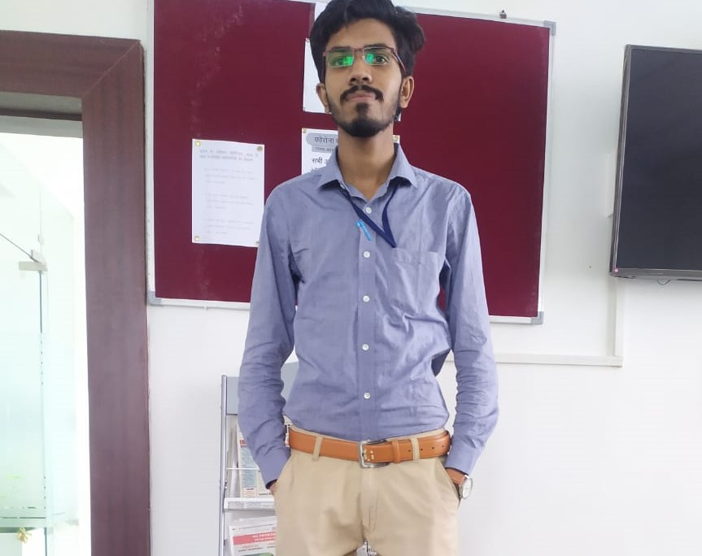

<!DOCTYPE html>
<html lang="en">
  <head>
  <meta charset="UTF-8">
  <title>The CV</title>
  </html>
    <body>
        <table cellspacing="20">
            <tr>
                <td>
                    </td>
                    <td>
                    <h1>Chitranshu Patankar</h1>
                    <p>Software Developer @OpenSense Labs</p>
                    <a href="Contact Information.html">Personal Information</a>
            </tr>
        </table>
        <hr size="3" noshade=""
        color="crimson">
        <h3>Eduaction</h3>
        <p>I done my graduation(B.TECH) form Indira Gandhi Engineering College Sagar Madhya Pradesh.</p>
        <p> Branch: <a href="https://www.shiksha.com/engineering/electronics-communication-engineering-chp"><em><strong>Electronics and Communiction</strong></em></a></p>
        <p>I passed my 12th standard in the year 2019 and scored 72%.from Dreamz public school Multai.</p>
        <p>Stream: Physics,Chemistry,Maths.</p>
        <p>I passed my 10th standard in the year 2017 and scored 81%.from Maa tapti Higher Secondary school Mulati.</p></td>
        <hr size="3" noshade=""
        color="crimson">
        <h3>Skills</h3>
        <ul>
            <li>Java Full Stack Developer</li>
            <ul>
                <li>Core Java</li>
                <li>Advance Java</li>
                <li>SQL Data Base Management</li>
                <li>JavaScript</li>
            </ul>
        </ul>
        <ul>
            <li>Web Developer</li>
            <ul>
                <li>HTML.5</li>
                <li>CSS</li>
                <li>BootStrap</li>
                <li>Moongose DB</li>
            </ul>
        </ul>
        <hr size="3" noshade=""
        color="crimson">
        <h3>Work Experience</h3>
        <p>Lara technology, Bengaluru — <em><strong>Java Programming</strong></em>
            June 2022 - Sep 2022.</p>
        <p>As a trainee at Lara technology I learned the core 
            concepts of object oriented programming, core java, 
            oops concepts..</p>
        <h3>Projects</h3>
        <p>Third Eye For Blind,
            It is an Arduino based 
            project basically for 
            blind people. In this 
            we use Ultrasonics 
            sensors, Arduino Uno 
            board , Buzers , 
            Jumper wires and 
            batteries.</p>
        <hr size="3" noshade=""
        color="crimson">
        <h3>Hobbies</h3>
        <ol type="1">
            <li>Reading Books</li>
            <li>Playing Badmintion</li>
        </ol>
        <h3>Strength And Weakness</h3>
        <p>My Strength is Honesty.</p>
        <p>My weakness is,I cant say no when someOne ask me to do something.</p>
        <hr>
        <h3>ThankYou</h3>
    </body>  
</html>